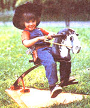
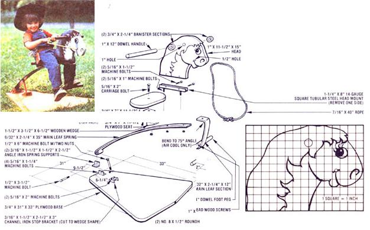

Although many toys found on store shelves today are downright clever, the cost of that ingenuity sometimes shines through all too brightly. Don't be discouraged, though, because-even in a world of alkaline batteries and high-impact plastic-there's still room for an honest-to-gosh old-fashioned hobbyhorse . . . a plaything that won't set you back more than a few bucks but is sure to thrill your tiny ones.
This stallion's bounce comes not from curved "feet", as is the case with rocking horses, but from a junked automobile leaf spring, the likes of which are littering scrapyards across the nation. It doesn't matter what sort of vehicle "donates" your spring, of course, as long as it's in one piece and measures at least 4 feet from eye to eye . . . but do try to find one with at least one rubber end bushing intact, since this will help dampen the shock of each bouncing stroke.
Besides the main leaf, you'll need a piece of 3/4" plywood measuring 31" X 33" and another that's 7" X 11-1/2" . . . an 11-1/2" X 15" section of full inch-thick board . . . a 26" length of 1" dowel . . . a scrap of 2 X 4 that's about 6-1/2" long . . . a 7/16" X 40" hank of rope . . . and a 2-1/4"-diameter, 1-1/2" length of banister handrail.
The metal components include a piece of 3/16" X 1-1/2" X 1-1/2" X 5" angle iron, a 2-1/2"-long section of channel bar measuring 3/16" X 1-1/2" X 3", and an 8" length of 1-1/4" square tubular steel. For hardware, you'll need a 1/2" X 6" machine bolt with two nuts, a 3-1/2" bolt of the same diameter, a 5/16" X 2" carriage bolt, two No. 8 X 1/2" roundhead wood screws, and an as sortment of 5/16" machine fasteners: two I", four 1-1/4", two 1-1/2", and two 2" in length.
Begin by cutting the wooden parts to shape. To do so, use the grid diagram in this article to recreate the outline of the head and to position the necessary openings and embellishments. Then go on to trim the seat and the five-sided base. At the same time, lop a 12" piece from the dowel, and cut the 2 X 4 to form a broad wedge.
Drill the 1/2" and 1" holes in the horse's head where indicated, then paint the whole slab one base color. (When that's dry, you can add the black outlines, and-later still-perhaps finish up the mane with a few deft strokes from a can of spray paint.) To fasten the foot-long handle to the head, first bore a 1" hole through the core of the banister rail and cut that piece in half to form two wooden rings. Then cement the dowel into its opening in the head and the two rings-in turn-to both the head and the handle, using yellow carpenter's glue.
The next step is to form the spring. First, cut it into two lengths-one 35" and the other 12"-then bend the shorter section to a 75° angle so the leg with the eye is about 9" long. (Both these procedures will require the use of a cutting torch . . . plan to borrow one for a few minutes if you don't have your own.) Drill four 11/32" holes through these metal parts . . . one into the middle of the short leg on the angled bar, and the other three through the arced piece, positioned about 6 inches from one another and with the first at a point 1 inch from the leaf's cut end. (Hint: Spring steel is rather hard, so you may want to drill small pilot holes first, or possibly use a drill press to make these bores.)
To mount the main leaf, first place it on your plywood base in such a way that the core of its eye is centered about 1-3/4 inches from the narrow end of the platform. Mark this spot-along with the width of the eye-and cut the angle iron section into two equal pieces, and the channel iron into a solid-topped wedge shape forming an angle of 22°. While you're at it, slice one side from your length of square tubular steel to produce an 8"-long U-shaped section.
Go on to bore the holes in these metal pieces to accept the various 1/2" and 5/16" fasteners (use the predrilled openings in the long leaf to position the holes in the newly made "U" piece). Then, with the angle and channel mounts as templates, drill the six 5/16" holes through the platform, being careful to center the 1/2" bore in the spring stop bracket 6-1/4 inches from the midpoint of a line drawn between the holes in the angled "holders".
Now, fasten the supports in place, using 5/16" bolts as illustrated (you may want to countersink the heads to keep them from marring the floor), and double-nut the 1/2" X 6" stop bolt firmly to its mount. Slip the 1/2" X 3-1/2" bolt through the angle brackets' shoulders and the end of the leaf spring, then bolt the 8" length of modified square tubular steel to the spring and to the smaller angled leaf. Next, fasten the base of the wooden head inside the groove of the exposed tubular steel section (you'll have to cross-drill two more mounting holes and remove some wood at its lower edge to allow a flush fit). Slip the remaining dowel into the bushingless eye and lock it there with two No. 8 wood screws.
Finish up the project by fastening the seat to the main leaf with the wooden wedge between, using the carriage bolt, and tying the bridle rope into a loop through the 1/2" hole in the horse's mouth. A coat of paint in the color(s) of your choice will serve to dress up your steed, as will the addition of leather ears, a sisal mane, or what have you.
No matter how you deck it out, though, your youngsters are sure to enjoy the toy's lively spring . . . and as long as they're not much heavier than 50 pounds, this bronco won't "bust" for quite a few years to come.
Hi-ho, Silver . . . awaaay!
|
 |
 |
|